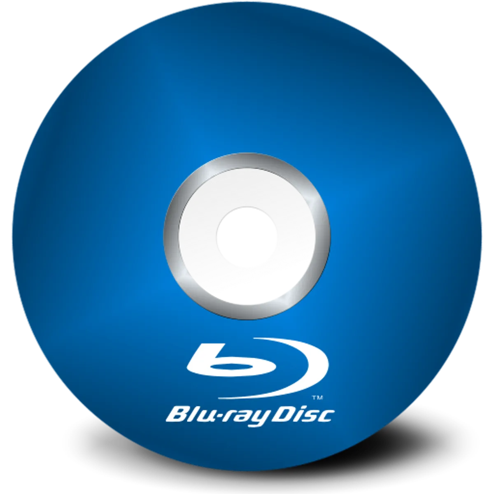

Voici le parcours pour la partie hardware
Disque blu-ray

- Entrée et sortie
- Disque optique numérisé permettant de stocker des données
- Capacité jusque 100GB
- 25GB => 1€/pièce
Imprimante
- Sortie
- Périphérique d'ordinateur qui imprime sur du papier
- Vitesse impression, jet d'encre, laser, wifi, usb, couleur, ...
- À partir de 50€
Modem
- Entrée et sortie
- Convertit des signaux afin de transmettre des données entre
ordinateurs par le réseau téléphonique ou le réseau câblé.
- Il existe trois types de modem : câble, DSL et fibre optique. Ces
modems utilisent chacun un moyen de communication différent selon
le fournisseur d'accès à Internet (FAI).
- Nombre de ports, wifi, couverture wifi, bande passante des ports
- A partir 25 €